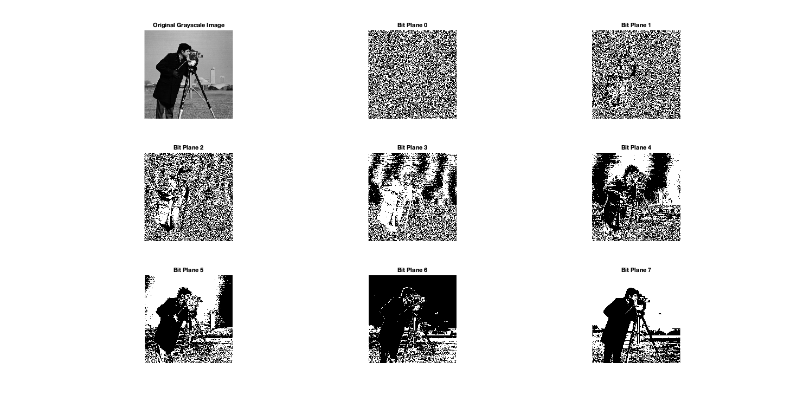

clear all;
close all;
clc;
imagePath = 'cameraman_image.png';
grayImage = imread(imagePath);
if size(grayImage, 3) == 3
grayImage = rgb2gray(grayImage);
end
[rows, cols] = size(grayImage);
outputFolder = 'BitPlaneOutputs';
if ~exist(outputFolder, 'dir')
mkdir(outputFolder);
end
figure;
subplot(3, 3, 1);
imshow(grayImage, []);
title('Original Grayscale Image');
imwrite(grayImage, fullfile(outputFolder, 'Original_Grayscale_Image.png'));
for bp = 0:7
bitPlaneImage = bitget(grayImage, bp + 1);
outputFileName = fullfile(outputFolder, sprintf('BitPlane_%d.png', bp));
imwrite(logical(bitPlaneImage), outputFileName);
subplot(3, 3, bp + 2);
imshow(logical(bitPlaneImage));
title(['Bit Plane ', num2str(bp)]);
end
set(gcf, 'Position', get(0, 'Screensize'));
saveas(gcf, fullfile(outputFolder, 'BitPlane_Slicing_Results.png'));
disp(['Bit-plane slicing completed. Output saved in folder: ', outputFolder]);
Bit-plane slicing completed. Output saved in folder: BitPlaneOutputs
